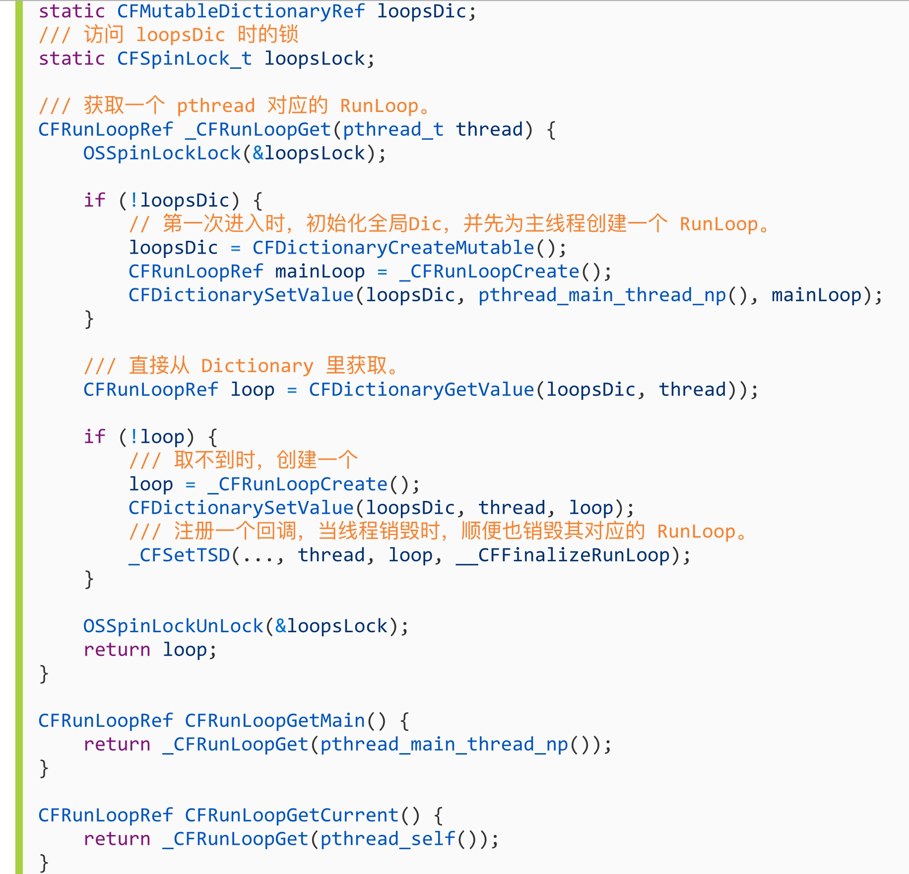
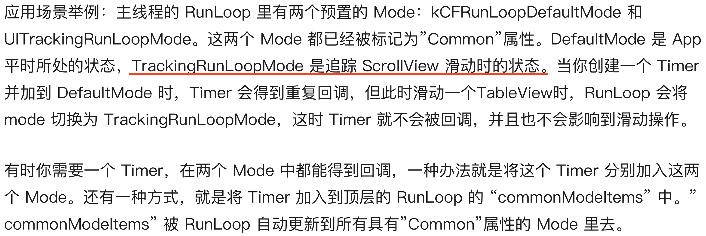

RunLoop 详解
- RunLoop 概念
- RunLoop与线程的关系
## RunLoop 概念
一般来讲一个线程一次只能执行一个任务,执行完成后线程就会推出了,很明显,现在的 APP 都是不可能这种模式的,否则 APP 打开之后就死掉了,也就没有任何作用了.
现在的这种模式其实是一种循环模式,保持一个线程始终存在,然后再处理各种操作(功能)等.
现在 APP 的实现机制其实是需要线程能随时处理事件,但是并不退出,通常的代码逻辑是这样的:(伪代码) 从代码可以看出是一种循环机制.
从代码可以看出是一种循环机制.
这种模式通常被称为 EventLoop.iOS/OSX里的 runloop 就是这种模式.
这种模式的关键点:- 如何管理事件/消息
- 如何让线程在没有消息处理的时候休眠,避免占用资源
- 在有消息需要处理的时候立刻被唤醒(否则就是卡顿了)
所以 runloop 实际上就是一个对象,这个对象管理了需要其处理的事件和消息.并且提供了一个入口函数来执行上面的 EventLoop 逻辑.
线程执行了这个函数之后,就会一直处于这个函数内部"接受消息->等待->处理"的循环中,知道这个循环结束,函数返回.
OSX/iOS 中提供了两个这样对象:NSRunLoop,CFRunLoopRef .
- CFRunLoopRef 是在 CoreFoundation 框架内的,提供的纯 C 函数的 API,所有这些 API 都是线程安全的.
- NSRunLoop 是基于 CFRunLoopRef 的封装,提供了面向对象的 API,但是这些 API 不是线程安全的
RunLoop 与线程的关系
先给结论:
1. RunLoop 和线程是一一对应的.
2. RunLoop 和线程的对应关系保存在一个全局的字典里
3. 线程刚创建的时候是没有 RunLoop 的,如果不主动获取就一直不会有!
4. RunLoop 的创建是发生在第一次获取时.
5. RunLoop 的销毁是发生在线程结束时
6. 你只能在一个线程内部获取其 RunLoop(主线程除外)
7. 苹果并不允许主动创建 RunLoop,只提供了两个获取的函数:CFRunLoopGetMain(),CFRunLoopGetCurrent().

在 CoreFoundation 中关于 RunLoop 有 5 个类:
- CFRunLoopRef
- CFRunLoopModeRef
- CFRunLoopSourceRef
- CFRunLoopTimerRef
- CFRunLoopObserverRef
其中的 CFRunLoopModeRef 并没有对外暴露,只是通过 CFRunLoopRef 的接口对外进行了封装 一个 RunLoop 包含若干个 Mode，每个 Mode 又包含若干个 Source/Timer/Observer。每次调用 RunLoop 的主函数时，只能指定其中一个 Mode，这个Mode被称作 CurrentMode。
如果需要切换 Mode，只能退出 Loop，再重新指定一个 Mode 进入。这样做主要是为了分隔开不同组的 Source/Timer/Observer，让其互不影响。
一个 RunLoop 包含若干个 Mode，每个 Mode 又包含若干个 Source/Timer/Observer。每次调用 RunLoop 的主函数时，只能指定其中一个 Mode，这个Mode被称作 CurrentMode。
如果需要切换 Mode，只能退出 Loop，再重新指定一个 Mode 进入。这样做主要是为了分隔开不同组的 Source/Timer/Observer，让其互不影响。
CFRunLoopSourceRef 是事件产生的地方。Source有两个版本：Source0 和 Source1。
- Source0 只包含了一个回调(函数指针)
Source1 包含了一个回调(函数指针)和一个 mach_port
Source0 并不能主动触发事件,使用的时候需要先调用CFRunLoopSourceSignal(source)，将这个 Source 标记为待处理,然后手动调用CFRunLoopWakeUp(runloop) 来唤醒 RunLoop，让其处理这个事件。
Source1 能主动唤醒 RunLoop 的线程.通常用于内核和其他线程相互发送消息
CFRunLoopTimerRef 是基于时间的触发器,它和 NSTimer 是toll-free bridged 1 的,可以混用.其包含一个时间长度和一个回调(函数指针).当其加入 RunLoop 中时,RunLoop 会注册对应的时间点,当时间点到了,RunLoop 会被唤醒以执行那个回调.
CFRunLoopObserverRef 是观察者,每个 Observer 都包含了一个回调(函数指针),当 RunLoop 的状态发生变化时,观察者就能通过回调接受到这个变化.可以观察的时间点:

上面的 Source/Timer/Observer 被统称为 mode item，一个 item 可以被同时加入多个 mode。但一个 item 被重复加入同一个 mode 时是不会有效果的。如果一个 mode 中一个 item 都没有，则 RunLoop 会直接退出，不进入循环。
RunLoop 的 Mode
CFRunLoopMode 和 CFRunLoop 的结构大致如下：

这里有一个概念叫"CommonModes":
一个 Mode 可以将自己标记为"common"属性(通过将其 ModeName 添加到 RunLoop 的"commonModes"中),每当 Runloop 的内容发生变化时,RunLoop 会自动将_commonModeItems 里的 Source/Obsever/Timer 同步到具有 Common 标记的所有 Mode 里


RunLoop 的内部逻辑
根据苹果在文档里的说明，RunLoop 内部的逻辑大致如下:

内部代码整理:

可以看到，实际上 RunLoop 就是这样一个函数，其内部是一个 do-while 循环。当你调用 CFRunLoopRun() 时，线程就会一直停留在这个循环里；直到超时或被手动停止，该函数才会返回。
苹果用 Runloop 实现的功能
- kCFRunLoopDefaultMode: App的默认 Mode，通常主线程是在这个 Mode 下运行的。
- UITrackingRunLoopMode: 界面跟踪 Mode，用于 ScrollView 追踪触摸滑动，保证界面滑动时不受其他 Mode 影响。
- UIInitializationRunLoopMode: 在刚启动 App 时第进入的第一个 Mode，启动完成后就不再使用。
4: GSEventReceiveRunLoopMode: 接受系统事件的内部 Mode，通常用不到。
5: kCFRunLoopCommonModes: 这是一个占位的 Mode，没有实际作用。
AutoreleasePool
App 启动之后,苹果在主线程 RunLoop 里注册了两个 Observer,这两个观察者的回调都是_wrapRunLoopWithAutoreleasePoolHandler().
- 第一个 Observer 监视的事件是 Entry(即将进入 Loop)其回调回调用_objc_autoreleasePoolPush()创建自动释放池,优先级最高,保证创建自动释放池在所有回调之前
- 第二个 Observer 监视了两个事件:
- BeforeWaiting(准备进入休眠)时调用_objc_autoreleasePoolPop()和_objc_autoreleasePoolPush()释放旧的池并创建新的自动释放池;
- Exit(退出Loop)时调用_objc_autoreleasePoolPop()释放自动释放池,这个 Observer 的优先级最低,保证释放自动释放池发生在所有回调之后
事件响应
苹果注册了一个 Source1 (基于 mach port 的) 用来接收系统事件，其回调函数为 __IOHIDEventSystemClientQueueCallback()。
当一个硬件事件(触摸/锁屏/摇晃等)发生后，首先由 IOKit.framework 生成一个 IOHIDEvent 事件并由 SpringBoard 接收。这个过程的详细情况可以参考这里。SpringBoard 只接收按键(锁屏/静音等)，触摸，加速，接近传感器等几种 Event，随后用 mach port 转发给需要的App进程。随后苹果注册的那个 Source1 就会触发回调，并调用 _UIApplicationHandleEventQueue() 进行应用内部的分发。
_UIApplicationHandleEventQueue() 会把 IOHIDEvent 处理并包装成 UIEvent 进行处理或分发，其中包括识别 UIGesture/处理屏幕旋转/发送给 UIWindow 等。通常事件比如 UIButton 点击、touchesBegin/Move/End/Cancel 事件都是在这个回调中完成的。
参考:
https://blog.ibireme.com/2015/05/18/runloop/
-
Toll-free bridging,简称为TFB，是一种允许某些ObjC类与其对应的CoreFoundation类之间可以互换使用的机制。比如 NSString与CFString是桥接(bridged)的, 这意味着可以将任意NSString当做CFString使用，也可以将任意的CFString当做NSString使用 ↩
Copyright © 2015 Powered by MWeb, Theme used GitHub CSS.